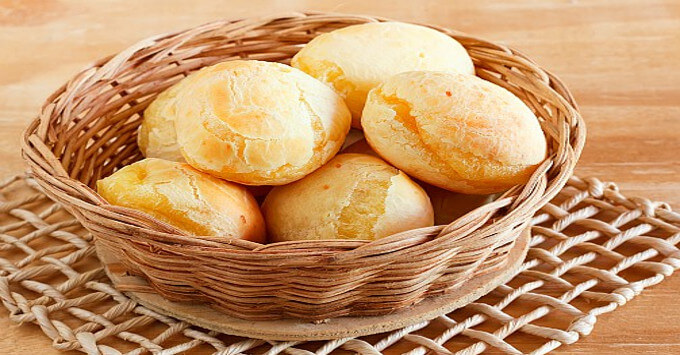

Pão de Queijo

O pão de queijo é uma bolinha de massa de queijo, crocante por fora e macia por dentro, originária do Brasil.
Ingredientes
- 800 g de polvilho azedo
- 1 xícara de leite
- 2 ovos
- 1 xícara de água
- 1/2 xícara de óleo
- 100 g de queijo parmesão ralado
- sal a gosto
Modo de Preparo
- Em uma panela, ferva a água e acrescente o leite, o óleo e o sal.
- Adicione o polvilho aos poucos até dar liga. Pode ser que você não precise usar os 800g, então coloque devagar e sove a massa até soltar da mão: esse é o ponto.
- Quando a massa estiver morna, acrescente o queijo parmesão, os ovos e misture bem.
- Unte as mãos e enrole bolinhas de 2 cm de diâmetro.
- Disponha as bolinhas em uma assadeira untada com óleo, deixando um espaço entre elas.
- Asse em forno médio (180º C), preaquecido, por cerca de 40 minutos.